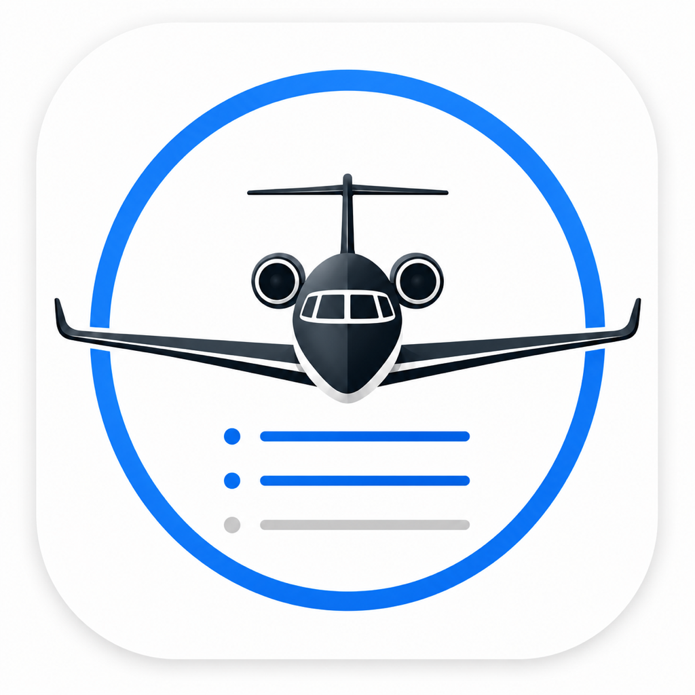

At a Glance
- Your logbook data is stored locally and, if enabled, in your own iCloud account.
- CSV imports and exports are processed locally on your device.

Alfa OmegaAlfa Omega is designed as a local-first pilot logbook. It does not run ads, does not use cross-app tracking, and does not send your logbook to a developer-operated server.
Alfa Omega does not collect personal data on a developer-operated server. The app can store flight log entries, aircraft and simulator profiles, limits, notes, duty and FDP times, crew names, airport data, and import history locally on your device because those records are the core function of the app.
Your logbook is stored on your device. If iCloud sync is enabled on your device, Apple CloudKit may sync app data through your personal iCloud account so your records are available on your devices. Alfa Omega does not operate or access that iCloud storage.
When you choose Sync with FL3XX, Alfa Omega opens FL3XX in a web view and lets you sign in with FL3XX or Microsoft. The app reads flight information from your visible FL3XX session to help create logbook entries. The app does not write changes to FL3XX.
FL3XX and Microsoft sign-in cookies may be stored by WebKit on your device so you do not have to sign in every time. You can use the Logout control in Alfa Omega settings to clear the FL3XX/Microsoft web session from the app.
When you enable location or simulator GNSS features, Alfa Omega may use that position locally to help Quick Stamp suggest or determine nearby departure and arrival airports. Position data is not sent to Alfa Omega servers.
CSV, TSV, aircraft, simulator, and logbook import/export actions are processed locally. Exported files are created only when you choose to export them, and sharing those files is controlled by the destination you select.
Alfa Omega can expose shortcut actions for logging duty and FDP timestamps. Those actions store the timestamps in your local app data and, if iCloud sync is active, in your iCloud-synced app data.
Alfa Omega does not include advertising SDKs or cross-app tracking. If you share Apple diagnostics with developers through iOS settings, Apple may provide crash or diagnostic reports under Apple's own privacy terms.
If Alfa Omega is distributed through the Apple App Store with paid features or subscriptions, all billing and payment processing is handled by Apple. Alfa Omega does not collect or store payment card details.
Apple, iCloud, FL3XX, Microsoft, and any file sharing destinations you choose are governed by their own privacy policies. Alfa Omega only interacts with those services when required by features you initiate.
Alfa Omega is intended for aviation record keeping and is not directed to children under 13. The app does not knowingly collect personal information from children.
This policy may be updated from time to time. When changes are made, the updated version will be posted here and the date at the top of this page will be changed.
For privacy questions about Alfa Omega, contact Rasmus Sundsten at rasmus@sundsten.fi.